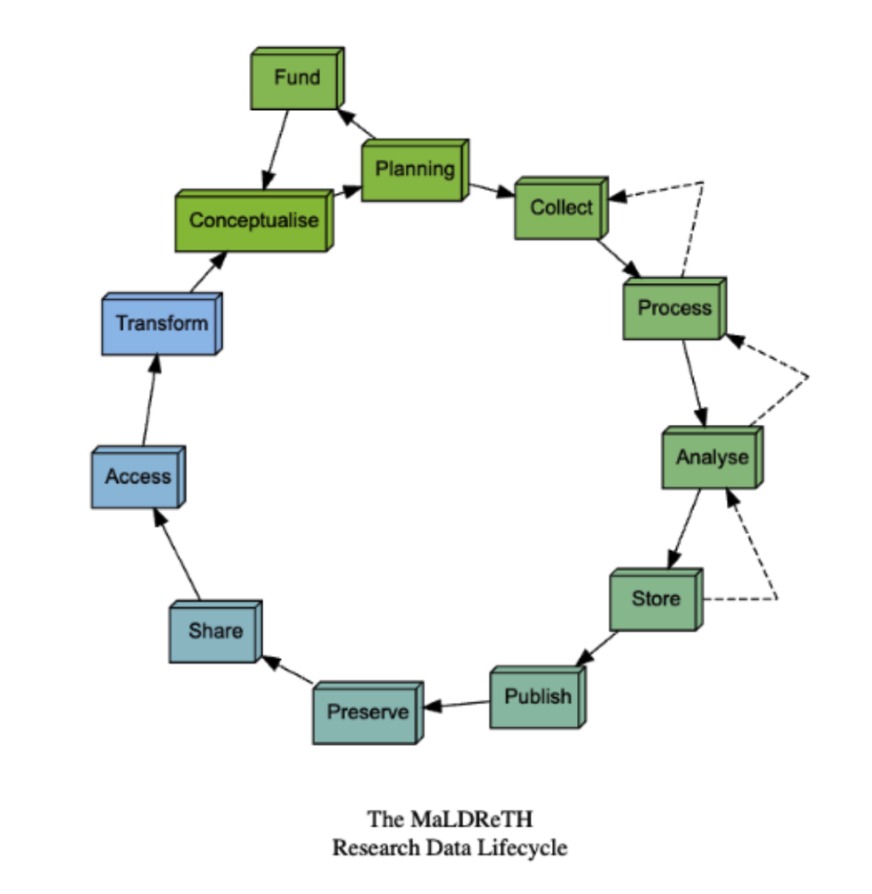
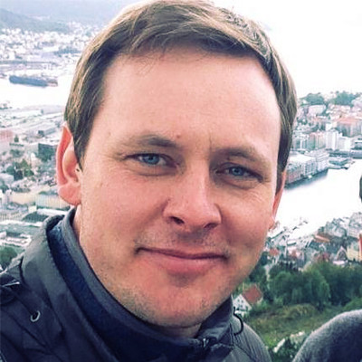

Overview
Biomedical research is typically planned and conducted in silos in areas such as basic research, clinical care, omics analyses, animal studies, utilizing research repositories, electronic lab notebooks, and computational resources. This siloed approach impedes the effective data management, sharing, discovery, and utilization of health and related biomedical data. Despite advances in individual data domains, the absence of standardized technical infrastructure, common data semantics, and the ability to interoperate across these silos and between different stages of the data lifecycle, prevents researchers from efficiently and effectively integrating heterogeneous data sources. In turn, this limits the rigor of replicability and reproducibility of research results and analyses, and creates barriers to translating research insights into clinical impact.
“Vertical” interoperability between research tools used in every stage of the research lifecycle can potentially help to overcome the siloed nature of much current research, and enable seamless passage of data and metadata throughout the lifecycle, from the initial stages of research planning to the archiving and deposit of research outputs.


By enabling research tools used at every stage of the lifecycle to communicate and exchange structured data and metadata, this concept of vertical interoperability allows seamless passage of information from study design and data capture through analysis, repository deposit, and long-term data sharing and archiving.
The Vertical Interoperability Innovation Lab intends to develop and propose infrastructure architecture constructs such as workflows, models, etc. that address vertical interoperability and bridge these first- and last-mile data/metadata connectivity gaps, enabling federated biomedical research infrastructure across the data lifecycle. In so doing, the proposed architecture models will help to sustain NIH's commitment to data/metadata sharing, enhance human-derived data utility for science, and strengthen the capacity of the biomedical research community to conduct rigorous, reproducible, and transparent health-focused research. Participants will have the opportunity to shape and co-develop the next generation of models of interoperability that enable seamless flow of data across the research lifecycle. By contributing to this effort, you’ll strengthen technical expertise, expand your network and position yourself to take advantage of emerging opportunities.
The Challenge
To create a truly connected, FAIR (Findable, Accessible, Interoperable, and Reusable) data ecosystem, participants will develop concept workflows that overcome these communication barriers. We invite bold thinking to drive significant advances in key areas, including:
- Federated Architectures for Collaboration: Enabling multi-institutional consortiums to maintain their own local data management systems while automatically federating sample metadata, experiment provenance, and analytical results. This allows cross-site research to operate on unified, traceable datasets without requiring inefficient data migration to central repositories.
- Automated Metadata and Compliance Workflows: Developing systems where structured metadata, including protocols, instrument outputs, data use limitations, and consent mappings, are captured seamlessly at the source. This information should automatically populate repository-compliant documentation, eliminating manual curation delays and accelerating data sharing.
- Lifecycle Orchestration and Integration: Reimagining core research tools, such as Electronic Lab Notebooks (ELNs), not just as static records, but as dynamic coordinating engines that seamlessly connect initial data management plans with active data production through to long-term repository deposition.
- Integrated capture of data collection/organization and computational analysis: Bridging the gap between data collection and organization on the one hand and computational analysis on the other. By ensuring analytical pipelines automatically document tool versions, parameters, and outputs back to the original raw data, researchers can enable frictionless reproducibility where anyone can replay an analysis and verify findings.
This Innovation Lab will explore these challenges, and many others, through real-world use cases, particularly focusing on the friction points experienced by cross-domain researchers.
About the Workshop
The Vertical Interoperability Innovation Lab is a cross NIH activity hosted by Office of Data Science Strategy (ODSS), National Cancer Institute (NCI), and National Library of Medicine (NLM). It will be a highly interactive, collaborative working session designed to generate actionable research proposals.
Participation is limited to approximately 30 participants.
The workshop will include:
- Guided discussions
- Structured brainstorming
- Small-group collaboration
- Rapid project development and refinement
- Input from Subject Guides (field experts who frame and challenge ideas)
Participants will work together to:
- Envision future research directions in vertical interoperability
- Develop interdisciplinary proposal teams
- Pitch and refine concept workflows
- Identify promising pathways for future activity
This workshop is intense, interactive, and future-oriented. We will bring together individuals from different disciplines to engage in first-principles thinking and collaborative design. The workshop will be facilitated by Knowinnovation, specialists in accelerating scientific innovation and guiding high-impact research communities toward strategic outcomes.Participants can expect a highly interactive virtual event, with the majority of time devoted to small group, solution-focused dialogue and collaborative development.
Who Should Apply?
We welcome applications from individuals working across the biomedical research data ecosystem, including:
- Wet lab researchers
- Computational Researchers
- Information Scientists
- Research Engineers
- Research Service Providers
We are especially interested in participants who:
- Work across multiple stages of the data lifecycle
- Experience real interoperability friction points
- Are motivated to co-design practical, forward-looking solutions
The Subject Guide Team
The Organizers have enlisted the guidance of a diverse subject guide team. They will serve to help guide discussions and work closely with the facilitation team to ensure participants are supported and workshop goals are reached.
Rory Macneil
CEO Research Space
Rory Macneil, CEO Research Space. Rory has been involved with the development of research data management for the past 20 years. As CEO of Research Space, he has overseen the evolution of RSpace from an electronic lab notebook to a research orchestration platform that integrates with 20+ other research tools, exemplifying the principle of vertical interoperability. His main interests center on enabling passage of data and metadata between research tools, the associated topic of tool and data interoperability, and development of integrated research infrastructures that facilitate these data and metadata flows. Rory is a co-chair of the RDA MaLDReTH Map of Digital Research Tools Working Group, and with colleagues at Research Space and the California Digital Library led the NSF CI PAOS: Advancing Research Data Management through Enhanced Vertical Interoperability project

John Chodacki
Director, University of California Curation Center
John Chodacki is director of the University of California Curation Center (UC3) at California Digital Library (CDL). As UC3 Director, John works across the UC campuses and the broader community to ensure that CDL’s digital curation program meets the emerging needs of the scholarly community—including digital preservation, persistent identifiers, research data management, and data publishing. Prior to CDL, John oversaw product development activities at O’Reilly Media, VIZ Media, Zinio, Creative Edge, Safari Books Online, and PLOS. He currently serves on the board and/or steering committees of DataCite, FORCE11, ROR (Research Organization Registry), COUNTER, Collaborative Knowledge (Coko) Foundation and Metadata 2020.
Kristi Holmes
Professor and Director, Northwestern University
Kristi Holmes, PhD, is a recognized leader in knowledge management, FAIR data practices, and research impact at Northwestern University. She serves as Associate Dean for Knowledge Management and Strategy and directs the Galter Health Sciences Library and Learning Center at the Feinberg School of Medicine. She is a Professor of Preventive Medicine in the Division of Biostatistics and Informatics, where her work centers on expanding access to information, strengthening data‑driven discovery, and addressing emerging issues at the intersection of AI and research. Within the Northwestern University Clinical and Translational Sciences Institute (NUCATS), Dr. Holmes is the Director of Informatics and Data Science and co-leads strategic management for the institute. She also serves as Chief of Knowledge Management in the Institute for Artificial Intelligence in Medicine. She leads several initiatives to drive impact, including the NNLM National Evaluation Center and efforts to develop data metrics and build institutional systems that recognize and reward meaningful data contributions. Throughout her career, she has championed shared knowledge ecosystems and evidence‑based approaches that strengthen transparency, collaboration, and research impact across the scientific community.
Rebecca Boyles
Deputy Director, RENCI at the University of North Carolina at Chapel Hill
Rebecca Boyles is a professor of the practice at the UNC School of Data Science and Society, where she brings a wealth of experience in advancing data-centric solutions for societal benefit. As deputy director of the Renaissance Computing Institute (RENCI), she oversees the research division and contributes to RENCI’s overall strategic vision and business development. Her research focuses on developing fit-for-purpose solutions that enable researchers to use data for the public good. She is a strong advocate of the FAIR (Findable, Accessible, Interoperable and Reusable) data principles and is known for her ability to bridge the gap between research and information technology. Through a comprehensive data ecosystem approach, Boyles enables researchers to extract maximum value from their data assets, enhancing data-driven research and decision-making. Before joining RENCI in 2024, Boyles was the founding director of the Center for Data Modernization Solutions at RTI International. There, she established a multidisciplinary center focused on data-driven innovation. Prior to RTI, Boyles served as the first data scientist at the National Institute of Environmental Health Sciences (NIEHS), where she played a key role in defining the strategic vision for the environmental health science data ecosystem, maximizing data resources to address pressing public health challenges.
Sam Volchenboum
Director, Data for the Common Good at the University of Chicago
Dr. Sam Volchenboum is a Professor in the Department of Pediatrics and Associate Chief Research Informatics Officer for the Biological Sciences Division. He is the Associate Dean of Master’s Education and the Informatics Lead for the Institute for Translational Medicine. He is the Program Director for the Clinical Informatics Fellowship Program. His clinical specialty is pediatric hematology/oncology, caring for kids with cancer and diseases of the blood. In addition to caring for patients, Dr. Volchenboum studies ways to harness computers to enable research and foster innovation using large data sets. In addition to his clinical practice, he directs the Data for the Common Good, a research group dedicated to liberating and democratizing data. Their largest project, the Pediatric Cancer Data Commons, is the world’s biggest publicly-available repository for data from children with cancer. Until 2019, Dr. Volchenboum directed the Center for Research Informatics, a 40-person group that supports biological research throughout the division. As director of this center, he oversaw high-performance computing, HIPAA-compliant storage and backup, application development to support clinical trials, development and maintenance of the clinical trials management system, the clinical research data warehouse, data analytics and visualization, and bioinformatics, including high-throughput genomic analyses and machine learning. Dr. Volchenboum received his PhD in molecular biology and MD from the Mayo Medical School. He completed his residency at Cincinnati Children’s Hospital Medical Center before going to Boston for his pediatric hematology/oncology fellowship at the Dana-Farber Cancer Institute and Boston Children’s Hospital. He also completed a fellowship in informatics and received his Master’s in biomedical informatics from the Massachusetts Institute of Technology.
Sheenah Mische
Associate Professor, Dept of Pathology, NYU
Dr. Mische is a distinguished career core scientist with five decades of leadership in directing transdisciplinary, multi-technology core laboratories in academia and the pharma. She recently retired from NYU Langone, where she served as Senior Director of the Division of Advanced Research Technologies (DART) and Assistant Director of Shared Resources for the Perlmutter Cancer Center. Sheenah is recognized for her leadership in establishing shared resource cores as collaborative hubs of interdisciplinary science and inclusive teamwork. Her extensive background includes leadership roles as Director of Translational Sciences at Boehringer Ingelheim Pharmaceuticals and Director of the Rockefeller University Technology Center.
Throughout her career, Sheenah has championed shared resource cores as strategic partners and knowledge management hubs, ensuring data provenance, educating users on data standards, and fostering transparency, reproducibility, and collaboration essential to the success of the modern scientific enterprise. A veteran member of the Association of Biomolecular Resource Facilities (ABRF), Dr. Mische remains active on advisory boards and continues to advocate for cores as strategic partners in data management and sharing.